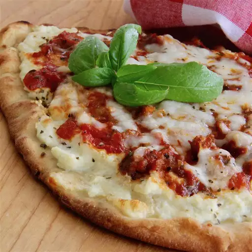

Lasagna Flatbread Recipe:

Ingredients:
- 1 (15 ounce) container ricotta cheese
- 1 (8 ounce) package shredded mozzarella cheese, divided
- 1 (3 ounce) package Parmesan cheese
- 1 egg
- 2 teaspoons Italian seasoning
- 1 pound sausage
- ½ (26 ounce) jar marinara sauce
- 6 flatbreads
Directions:
- Combine ricotta cheese, 1/2 of the mozzarella cheese,
Parmesan cheese, egg, and Italian seasoning in a bowl.
- Cook sausage in a skillet over medium heat until no longer pink,
5 to 10 minutes; drain. Stir in marinara sauce.
- Spread 1/6 of the cheese mixture evenly on each flatbread;
cover with sausage mixture. Top with remaining mozzarella cheese.
- Bake in the preheated oven until cheese is melted and bubbly, 10 to 15 minutes.